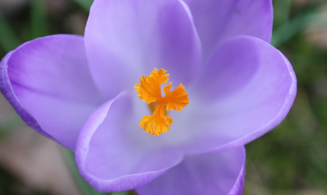

Nog snel op zoek naar een moederdag cadeautje?
De gehele maand mei krijg je 10 % korting op alle sieraden en cadeaupakketjes!
Voeding die bijdraagt aan een mooie en gezonde huid.
De stoffen uit je dagelijkse voeding die je nodig hebt om je huid in balans te houden
Voor een gave, gezonde huid is het belangrijk ervoor te zorgen dat je lichaam zo min mogelijk schadelijke stoffen binnen krijgt, dus het eten van gezonde voeding is essentieel. De organen die je lichaam reinigen en daarmee helpen je huid gezond te houden zijn je lever, nieren, bijnieren, schildklier en de darmen. Een gezonde gave huid is meestal een teken dat je lichaam van binnen schoon is.
Er zijn bepaalde soorten voeding die specifiek bijdragen aan een mooie, zuivere, gezonde huid, omdat ze veel stoffen bevatten die helpen je huid gezond te houden. Deze zijn onder andere:
-
•Eiwit: een belangrijke bouwstof die helpt bij de groei en herstel van de cellen in het lichaam;
-
•Oliën en vetten: deze vormen in onverzadigde vorm een beschermend laagje op de huid om vochtverlies tegen te gaan, en maken tevens de huid zacht en soepel;
-
•Vitamines: helpen tegen huidveroudering en beschermen de huid.
Tip: maak zelf een smoothie!
Een smoothie bevat doorgaans veel vitamine C en Vezels, beide zeer belangrijk voor een gezond lichaam. Ik heb drie recepten voor je op een rijtje gezet om je op weg te helpen.
Mango
Deze vrucht uit de tropen is rijk aan vitamine C en antioxidanten, zoals zeaxanthine, dat de ogen beschermt tegen de aandoening maculadegeneratie en nachtblindheid.
Tropische mango & banaan smoothie
-
•150 g mango
-
•1 kleine banaan
-
•1 eetlepel vers citroensap
-
•100 ml kokosmelk
Snij de mango in stukjes en de banaan in plakken. Pureer de vruchten en het citroensap en roer de kokosmelk erdoor. Extra lekker en voedzaam met een handje gehakte hazelnoten erdoor. In plaats van de kokosmelk kun je ook yoghurt gebruiken.
Blauwe bessen
Paars en blauw zijn kleuren die weinig in ons eten voorkomen. De blauwe kleurstoffen (anthocyanen) werken als een krachtige antioxidant en zijn goed voor hart- en bloedvaten.
Frisse vitamine smoothie
-
•100 g blauwe bessen
-
•100 g frambozen
-
•4 blaadjes munt
-
•150 ml sinaasappelsap
Pureer alle ingrediënten en schenk de smoothie in een hoog glas. De smoothie wordt minder zuur met wat suiker of honing erdoor. Je maakt ’m minder dik door er een beetje water of sap door te mengen.
Avocado
Avocado bevat veel vet en is daardoor lekker romig. Het vet is onverzadigd en is gezond voor hart en bloedvaten. Avocado bevat verder veel vezels.
Groene avocado & spinazie smoothie
-
•1 rijpe avocado
-
•100 g komkommer
-
•1 kiwi
-
•2 handen verse spinazie, gewassen
-
•100 ml koud water
Maak het fruit schoon, snij het in stukken en pureer alle ingrediënten. Ook lekker met veldsla of raapsteeltjes. Liever een iets fruitiger smaak? Voeg dan een kleine banaan toe.
Drink smakelijk!
Fijne Moederdag!
Beans Beauty Salon
Photos by Charlotte Wagemakers
Wil je de nieuwsbrief niet meer ontvangen mail dit dan naar beansbeautysalon@gmail.com